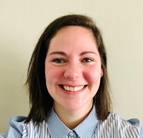
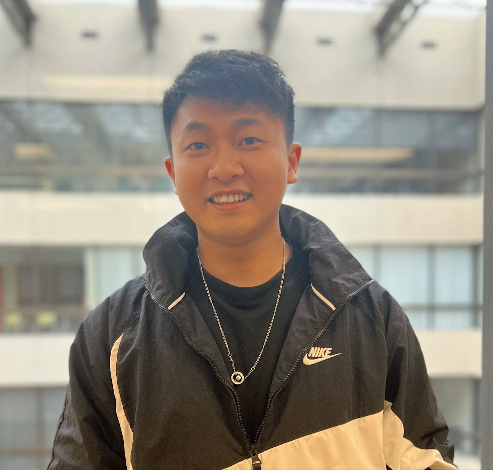
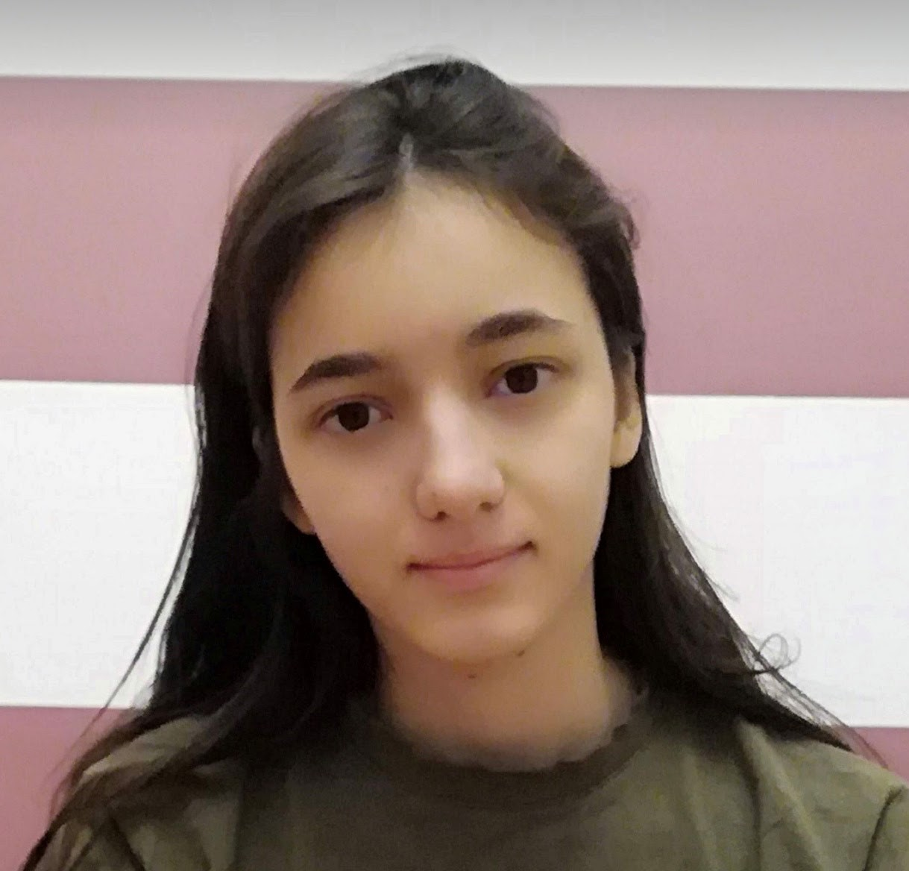
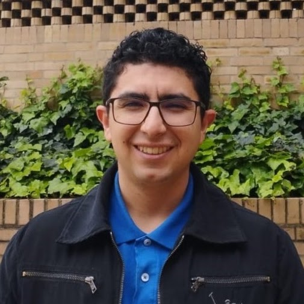

Research
My research program emphasizes actionable knowledge and research practicality to solve critical problems related to the learning process. Together with my research team, I collaborate with educational institutions and industry partners to understand how individuals learn and how they demonstrate their knowledge — from academic achievement to social-emotional learning.
What drives my work
Educational Data Mining
Using state-of-the-art methods in data mining, machine learning, and natural language processing to analyze large-scale educational data from digital assessments — turning complex information into practical insights for educators and institutions.
Learning Analytics
Harnessing student data from learning management systems and other digital sources to identify the factors associated with learning, and designing systems that support personalized education at every stage.
Psychometrics
Analyzing assessment data and investigating measurement quality — addressing psychometric issues such as bias, careless responding, and wording effects that threaten the validity and reliability of assessments.
Ongoing & past projects
A selection of the research streams my team and I are actively pursuing or have completed.
Automatic Item & Feedback Generation with LLMs
Fine-tuning and evaluating large language models to generate high-quality assessment items and personalized feedback for open-ended questions, with automated quality-assurance pipelines.
Conversation-Based Assessment
Designing conversational agents that turn formative assessment into a dialogue — boosting test-taking engagement and eliciting higher-level thinking from students.
Process Data & Response Times
Mining clickstream and response-time data from digital assessments to understand problem-solving behavior, detect disengagement, and improve scoring.
Personalized & Adaptive Testing
From computerized adaptive testing to intelligent recommender systems for personalized test scheduling, using reinforcement learning and machine learning algorithms.
Fairness in Learning Analytics
Developing fair machine learning approaches — including Seldonian algorithms and bias mitigation techniques — for educational prediction and classification tasks.
Score Reporting & Feedback
Designing digital score reports and feedback systems (e.g., ExamVis) that help students and teachers turn assessment results into actionable next steps.
Current graduate students
My research group includes graduate students in the Measurement, Evaluation, and Data Science (MEDS) program at the University of Alberta. Senior students work closely with new students on a wide range of research projects.

Ashley Clelland
MEDS, University of Alberta · 2022–present
Ashley is interested in applied measurement, data science, and evaluation in the context of public health and education, especially psychometric instrument development and data literacy assessment.

Bin Tan
MEDS, University of Alberta · 2023–present
Bin is interested in applying the methods and techniques in artificial intelligence and data science to modeling educational and psychological constructs (e.g., well-being and motivation).

Elisabetta Mazzullo
MEDS, University of Alberta · 2024–present
Elisabetta is interested in test development, computational psychometrics, and the application of artificial intelligence (AI) technologies to digital assessments in various educational settings.
Joyce Liu
MEDS, University of Alberta · 2025–present
Joyce is interested in computational psychometrics applications, both in low-stakes and high-stakes assessments, to gain deeper insight into students’ learning and competencies.
Kevin Vo
MEDS, University of Alberta · 2023–present
Kevin is interested in utilizing data science, particularly machine learning and educational data mining, to enrich our understanding of important educational and psychological variables.

Daniel Jerez Garcia
MEDS, University of Alberta · 2024–present
Daniel is interested in analyzing large collections of data from educational settings to address important educational and psychological questions.
Eunji Kim
MEDS, University of Alberta · 2025–present
Eunji is interested in applying quantitative and data-analytic methods to address empirical questions in educational measurement, evaluation, and learning.
Former advisees
Graduates of my lab have moved on to faculty positions and professional roles at institutions across North America.
- Joyce Liu — M.Ed.
- Tarid Wongvorachan — Ph.D.
- Guher Gorgun — Ph.D.
- Elisabetta Mazzullo — M.Ed.
- Bin Tan — M.Ed.
- Ashley Clelland — M.Ed.
- Seyma Nur Yildirim-Erbasli — Ph.D.
- Karen Fung — Ph.D.
- Jiaying Xiao — M.Ed.
- Derek Radford — M.Ed.
Prospective students
I welcome inquiries from prospective graduate students interested in computational psychometrics, educational data mining, and AI in education. Before reaching out, please review my current research projects above so we can have a productive conversation about how your interests align with the lab's work. Then get in touch with a brief description of your background and research interests.